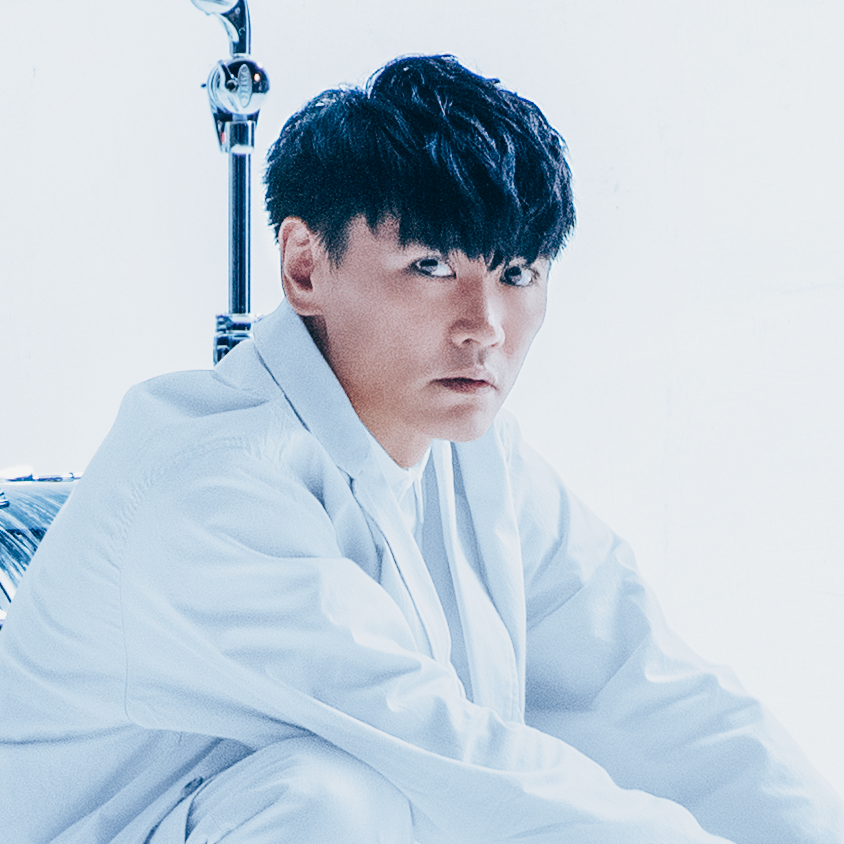
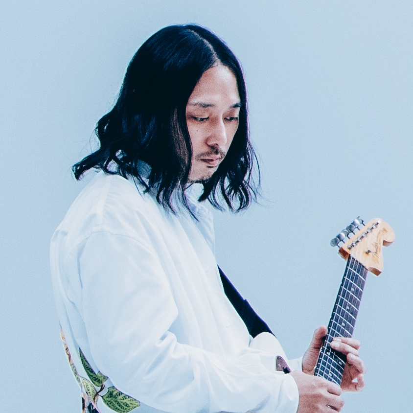
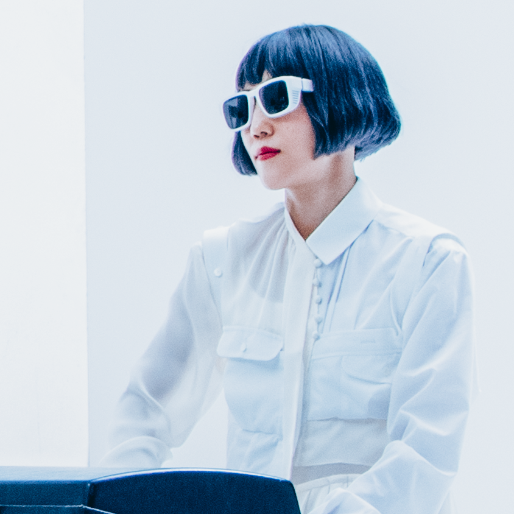
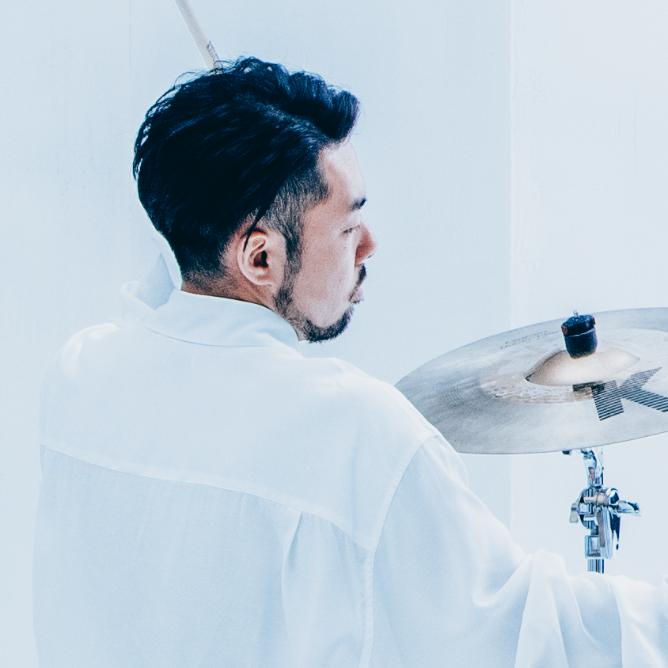
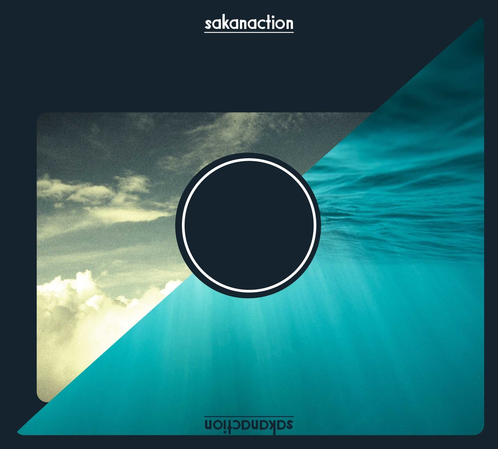

サカナクション
バンド紹介
サカナクションは、2005年に結成され、2007年にデビューした日本のロックバンド。
ボーカル・ギター担当の山口一郎を中心に男女5人で構成されている。
ジャンルは「テクノ」と「ロック」を合わせたような楽曲を多く作っている。
メンバー紹介
山口 一郎 （ボーカル・ギター）

岩寺 基晴 （ギター・コーラス）

草刈 愛美 （ベース・コーラス）
岡崎 英美 （キーボード・コーラス）

江島 啓一 （ドラムス）

おすすめのアルバム
「sakanaction」

- 代表曲
- ミュージック
- Aoi
アダプト